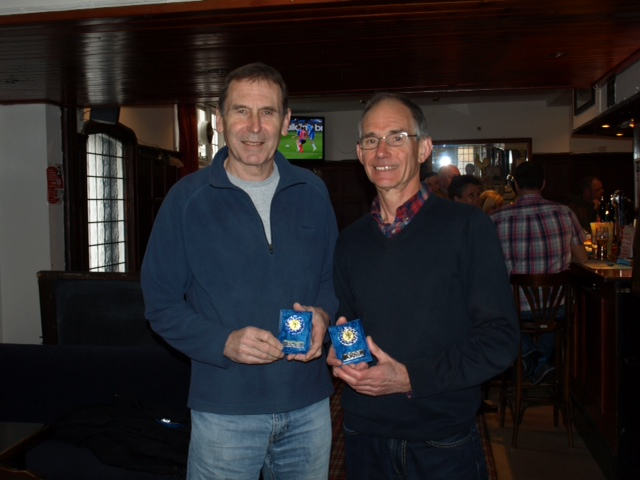
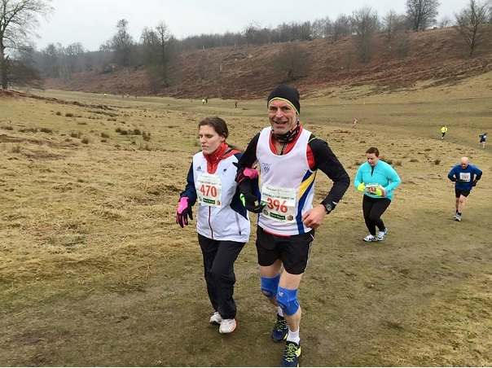

Four SAC athletes competed in the Dartford Half Marathon on Sunday March 15th, and the club came away with two medals. James Graham continued his winning streak to beat 20 others in the M60 category winning gold, in an impressive time of 1hr 28.18. Sally Shewell won bronze in the W55 category in 1hr 50.21.
The other SAC athletes present were Dan Witt, who was the fastest club runner on the day with a new personal best on 1.27.32, and Chris Desmond who recorded 1.28.21.
The full Sevenoaks AC results were:
| Pos | Race No | Name | Time | Net Time | Category | Cat Pos | Second Category | Gender | Gen Pos | Team |
| 45 | 489 | Daniel WITT | 01:27:32 | 01:27:30 | M40 | 13 | Male 40 | Male | 43 | Sevenoaks AC |
| 51 | 522 | Chris DESMOND | 01:28:21 | 01:28:18 | M50 | 5 | Male 50 | Male | 48 | Sevenoaks AC |
| 54 | 333 | James GRAHAM | 01:28:48 | 01:28:34 | M60 | 1 | Male 60 | Male | 51 | Sevenoaks AC |
| 256 | 354 | Sarah SHEWELL | 01:50:27 | 01:50:21 | F55 | 3 | Female 55 | Female | 47 | Sevenoaks AC |
The full results are here.
And at the Kent Fitness League awards, along with John Denyer, 1st M65, and Chris Desmond, 1st M50, James picked up the award for 1st M60, and is shown below with John and their medals:

Meanwhile, Darrell Smith led nineteen SAC runners in the Knole 10k with third place and first M40, while Cath Linney was second W45.
Jonathan Copping led blind runner Louise Simpson from Southend in the race. Louise is an experienced runner, having finished dozens of races, but it was a new experience for Jon. Jon reported, "We finished safely and I learnt a lot about leading a runner. We got lots of cheers and help - one of the cycling cadets watched over us all the way round. The rain held off and it wasn’t too muddy and we finished in 1hr 15.04 which was a pretty good result"

The Sevenoaks AC results were:
| Pos- ition | Bib- No. | Finish Time | Chip Time | Name | Gen- der | Cat- egory | Club | Rank |
|---|---|---|---|---|---|---|---|---|
| 3 | 497 | 00:37:39 | 00:37:39 | DARRELL SMITH | M | M40 | SEVENOAKS AC | 1 |
| 11 | 483 | 00:40:12 | 00:39:59 | LEE LINTERN | M | SM | SEVENOAKS AC | 2 |
| 13 | 135 | 00:40:30 | 00:40:30 | ANDREW MEAD | M | M40 | SEVENOAKS AC | 3 |
| 14 | 379 | 00:40:34 | 00:40:05 | ANDY ASHLEE | M | M40 | SEVENOAKS AC | 4 |
| 47 | 596 | 00:44:20 | 00:44:19 | CATHERINE LINNEY | F | W45 | 7OAKS TRI | 5 |
| 65 | 435 | 00:45:52 | 00:45:44 | GRAHAM DWYER | M | M40 | SEVENOAKS AC | 7 |
| 74 | 553 | 00:46:37 | 00:46:32 | ANTONY HORLOCK | M | M50 | SEVENOAKS AC | 8 |
| 107 | 580 | 00:48:26 | 00:48:20 | SIMON BISHOP | M | M50 | SEVENOAKS AC | 11 |
| 114 | 512 | 00:48:59 | 00:48:43 | SUZY CLARIDGE | F | W35 | SEVENOAKS AC | 12 |
| 124 | 502 | 00:49:33 | 00:49:26 | SIMON ROWE | M | M40 | SEVENOAKS AC | 13 |
| 129 | 211 | 00:50:00 | 00:49:57 | ANTON MAUVE | M | M40 | SEVENOAKS AC | 14 |
| 152 | 231 | 00:51:37 | 00:51:31 | JEAN-PIERRE DARQUE | M | M50 | SEVENOAKS AC | 15 |
| 165 | 346 | 00:52:17 | 00:51:48 | CLAIR THORNTON | F | W35 | SEVENOAKS AC | 16 |
| 178 | 136 | 00:52:56 | 00:52:50 | MARTIN WHITE | M | M40 | SEVENOAKS AC | 17 |
| 242 | 602 | 00:56:55 | 00:56:48 | ANTHONY WALDRON | M | M40 | SEVENOAKS AC | 20 |
| 335 | 359 | 01:01:54 | 01:01:46 | RONALD DENNEY | M | M60 | SEVENOAKS AC | 22 |
| 339 | 427 | 01:02:08 | 01:01:37 | MARIA ASHLEE | F | W35 | SEVENOAKS AC | 23 |
| 369 | 550 | 01:04:26 | 01:03:57 | SYLVIA LEWIS | F | W55 | SEVENOAKS AC | 25 |
| 421 | 396 | 01:15:39 | 01:15:04 | JONATHAN COPPING | M | M50 | SEVENOAKS AC | 27 |
The full results are here.